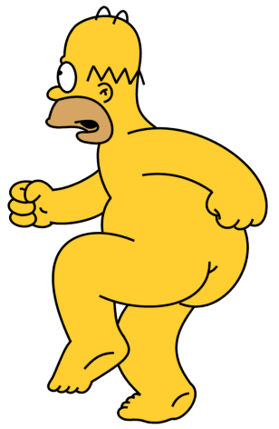
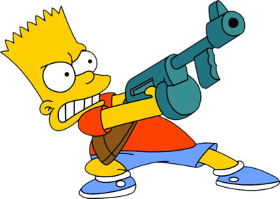
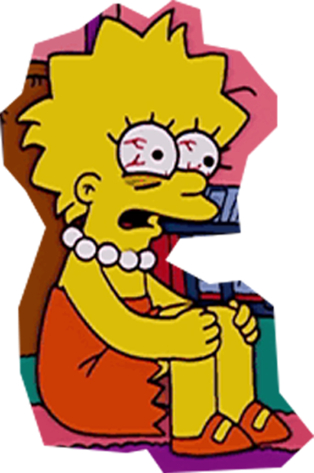
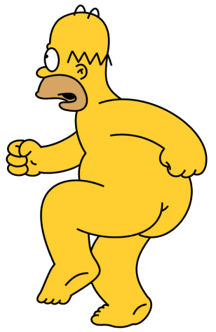
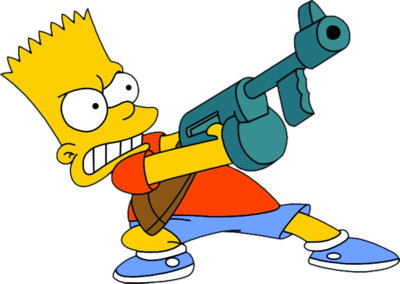
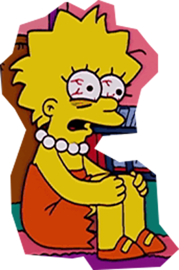
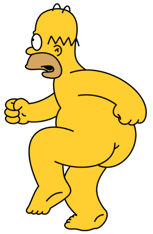
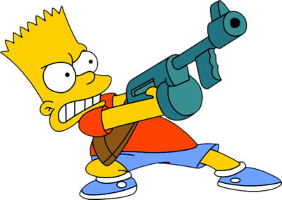
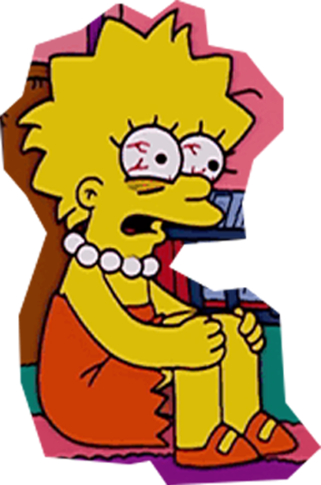
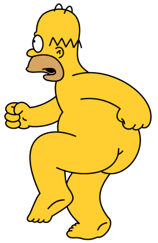
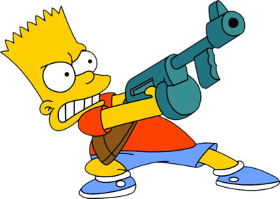
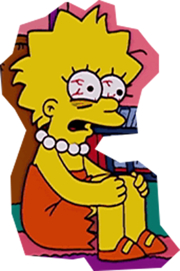
올해로 탄생 30주년을 맞이한 "심슨가족"은 여전히 사랑받는 TV프로그램 중 하나이다.
일본으로 여행을 떠난 심슨가족에게 벌어지는 엉뚱한 사건 속으로 다함께 떠나보자.
"난 100살까지 살 수도 있고 내일 버스에 치일수도 있는거야."
지금 떠나지 않으면 안될 것같은 느낌에 심슨가족은 일본 여행을 떠난다.
젊고 건강한 이때에 뭐든지 다 해낼 것 같은 마음으로 비행기에 올라타는데...
세상 신기한 구경을 하며 입을 다물지 못하는 호머심슨에게 마지는 뭘해야할지 모르겠으면
그냥 입다물고 있으라고 말해 정말 가만히 빤스만 입고 앉아있다.